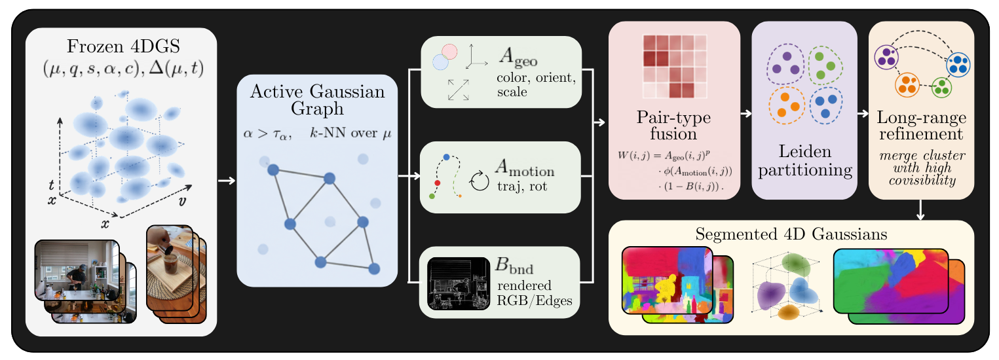
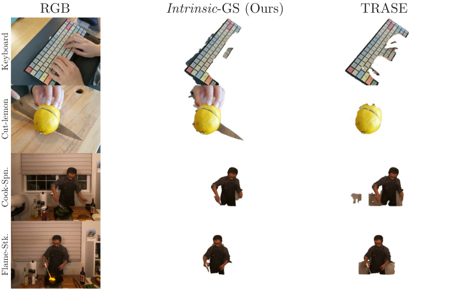
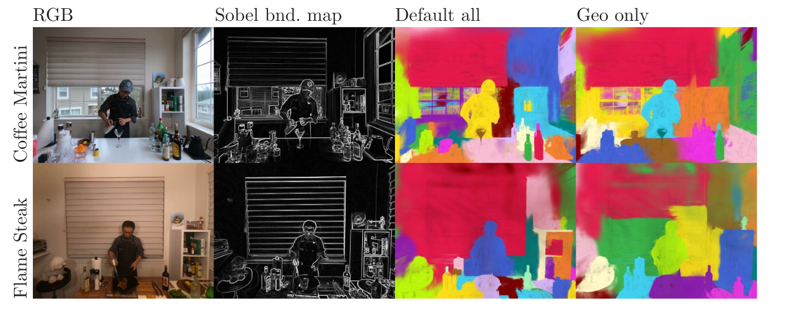

Dynamic 4D Gaussian Splatting reconstructs deforming scenes with high fidelity and is increasingly adopted as a representation for dynamic 3D scenes. Putting such a scene to use, for editing, manipulation or motion analysis, first requires segmenting it: grouping the Gaussian primitives into coherent objects. Current pipelines obtain this grouping by importing 2D masks from foundation models such as SAM and lifting or distilling them into the Gaussian representation. In dynamic scenes these masks must be generated across many frames and views, which is costly, and the resulting segmentation can depend strongly on the quality and consistency of those external masks.
We ask how much object-level structure can instead be recovered from the Gaussians themselves, and propose Intrinsic-GS, a training-free, mask-free method that builds a sparse affinity graph over Gaussian primitives from appearance, orientation, scale, deformation-trajectory and non-learned rendered-boundary cues. The graph is partitioned with Leiden community detection, requiring no foundation model and no learned feature field.
On the standard 4D Gaussian segmentation benchmarks, Neu3D and HyperNeRF, Intrinsic-GS recovers substantial object structure without mask supervision, reaching 0.746 mIoU on Neu3D and 0.575 on HyperNeRF; on Neu3D, a geometry-only variant reaches 0.902 mIoU, matching SAM-supervised TRASE. On HyperNeRF, Intrinsic-GS runs 12.5× faster than the mask-generation and feature-rendering stages used by mask-supervised pipelines. These results suggest that much of the segmentation signal is already encoded in the Gaussians themselves, offering a fast, mask-free direction for 3D and 4D Gaussian segmentation that may also point toward more generalizable, robust segmentation in settings where external masks are unreliable or expensive.

Starting from a frozen 4D Gaussian Splatting reconstruction, we build a sparse affinity graph over the active Gaussians. Edge weights fuse geometric cues (Ageo: color, orientation, scale), motion cues (Amotion: trajectory and rotation) and a non-learned rendered-boundary term (Bbnd). The graph is partitioned with Leiden community detection, followed by a long-range refinement step that merges clusters with high covisibility — with no SAM, no DEVA, no DINO and no learned edge in the default configuration.
Without any mask supervision, Intrinsic-GS recovers substantial object structure on the standard 4D Gaussian segmentation benchmarks. A geometry-only variant matches the SAM-supervised baseline (TRASE) on Neu3D, while running an order of magnitude faster than mask-based pipelines.
| Method | Mask supervision | Neu3D (mIoU) | HyperNeRF (mIoU) |
|---|---|---|---|
| TRASE (SAM-supervised) | Yes | 0.902 | — |
| Intrinsic-GS | No | 0.746 | 0.575 |
| Intrinsic-GS (geometry-only) | No | 0.902 | — |
On HyperNeRF, Intrinsic-GS runs 12.5× faster than the mask-generation and feature-rendering stages used by mask-supervised pipelines.

Without any mask supervision, Intrinsic-GS recovers objects that are comparable to, and in several cases cleaner than, the SAM-supervised TRASE baseline.

The rendered Sobel-boundary cue and the full set of intrinsic cues (Default all) yield sharper object boundaries than a geometry-only variant (Geo only), illustrating how each cue contributes to the final partition.
Additional qualitative results on Neu3D (cut-roasted-beef) and HyperNeRF (americano).
@article{yazar2026intrinsicgs,
title = {Intrinsic 4D Gaussian Segmentation from Scene Cues},
author = {Yazar, Hasan and Barhdadi, Mohamed Rayan and Serpedin, Erchin and Tuncel, Mehmet and Kurban, Hasan},
booktitle = {Preprint},
year = {2026}
}{kind=link}
{kind=link}